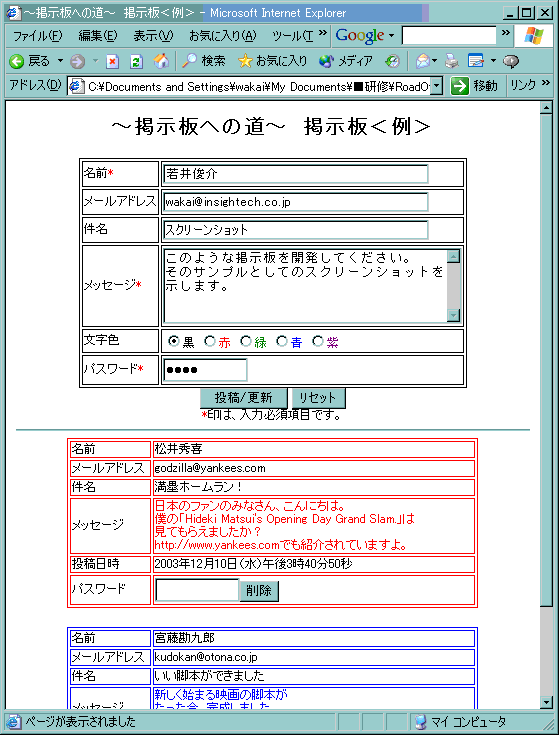

このマークは、自分で調査してください、という箇所です。調べて理解することが重要です。
このマークは、自分で調査してください、という箇所です。調べて理解することが重要です。とくに重要なキーワードには赤字にしてあります。
この研修のゴール
この研修のゴールは、下記の「要求される掲示板の仕様・機能」にて示された機能を満たすMVC掲示板を作成することです。開発環境基本事項
| OS | Windows |
|---|---|
| ブラウザ | Chrome 推奨 |
| Servletコンテナ | Apache TOMCAT (8.0.26 以降) |
| データベース | MySQL (v 5.6.25 以降)、mysql-connector-java-5.1.35-bin.jar(JDBCドライバ) |
このマークは、自分で調査してください、という箇所です。調べて理解することが重要です。|  |
|
研修課題提出の際のご注意
%WEBAPPLI%
|
+---\WEB-INF
|
+---\classes
|
+---\lib
としていただき、そのまま %WEBAPPLI% ごと圧縮ファイルにしてください。
メールが送れないことがあります。その場合は、lib ファイルの中を空にして送信してください。